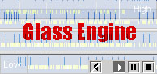

The science or study of being .. the essence of things... in
the abstract.
Functionally, an ontology is a specification for a structured vocabulary of terms and relationships, as manifested in a particular collection.
Conceptually and functionally, in physical neural pathways and digital data streams, ontologies serve as schemas. They form the basis for metadata and surrogates. They define spaces of signifiers and signifieds. They effect the set of meanings possible in a system.
reading: what is an ontology? [Tom Gruber]
An information science approach [For those of you who want to know more...]
reading: Natalya F. Noy and Deborah L. McGuinness, Ontology Development 101: A Guide to Creating Your First Ontology
reading:
David Turnbull,
Maps are Territories - Science is an Atlas,
p 1 - 27
[required text]
Maps are Territories - Science is an Atlas,
p 1 - 27
[required text]
 example: glass engine [Philip Glass | IBM]
This applet provides a dynamic visualization of the musical works of
Philip Glass. The visualization is based on a conceptual ontology,
that includes subjective attributes -- joy, sorrow, intensity,
density, velocity -- as well as typical metadata, such as piece name,
length, and year. The style of the visual presentation is consistent
with Glass' minimalist aesthetics.